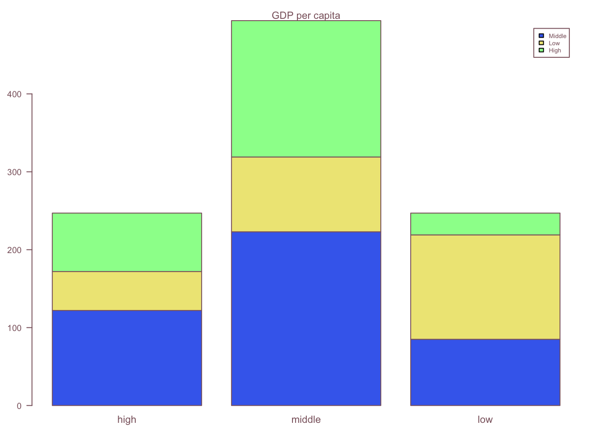
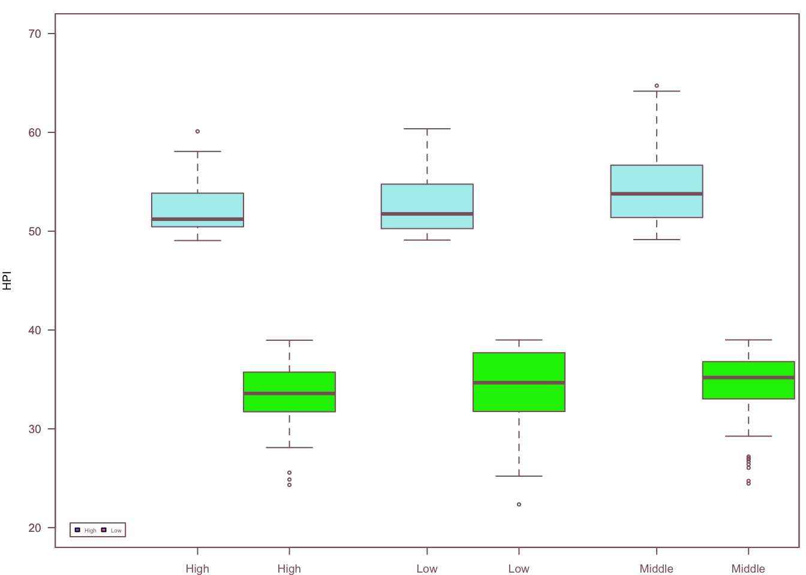
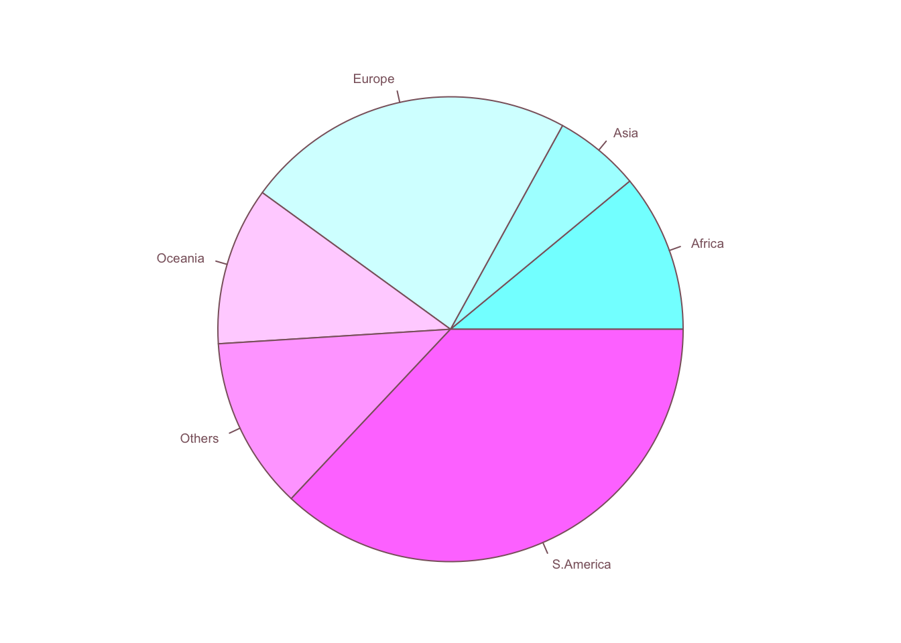

Code
rm(list=ls())
# Clear environment
hpi_df <- read.csv("/Users/jungmioh/Desktop/D.V. Rstudio/kristinehahm/HPI.csv", header = TRUE)
colnames(hpi_df)<-c("hpi_rank","country","iso","year",
"continent", "population", "life_expectancy",
"ladder_of_life", "ecological_footprint",
"hpi", "biocapacity_for_year", "gdp")
hpi2_df <- na.omit(hpi_df)
## Start plotting from basics
# plotting functions.
year <- c(2013, 2014, 2015, 2016, 2017, 2018, 2019)
hpi_score <- aggregate(hpi ~ year, hpi2_df, mean)
life_score <- aggregate(life_expectancy ~ year, hpi2_df, mean)
hpi_score <- c(hpi_score$hpi)
life_score <- c(life_score$life_expectancy)
# Setting the parameter (3 rows by 2 cols)
#par(mfrow=c(3, 2))
# Setting label orientation, margins c(bottom, left, top, right) & text size
par(las=1, mar=c(4, 4, 2, 4), cex=.6)
plot.new()
plot.window(range(year), c(40, 80))
lines(year, hpi_score)
lines(year, life_score)
points(year, hpi_score, pch=17, bg = "mediumpurple2", cex=.85) # Try different cex value?
points(year, life_score, pch=21, bg ="greenyellow", cex=.85) # Different background color
par(col="lightcoral", fg="lightcoral", col.axis="lightcoral")
axis(1, at=seq(2012, 2020, 2)) # What is the first number standing for?
axis(2, at=seq(30, 80, 10))
axis(4, at=seq(30, 80, 10))
box(bty="u")
mtext("year", side=1, line=2, cex=0.7)
mtext("HPI", side=2, line=2, las=0, cex=0.7)
mtext("Life Exp", side=4, line=2, las=0, cex=0.7)
text(4, 5, "Bird 131")
Code
par(mar=c(5.1, 4.1, 4.1, 2.1), col="pink4", fg="pink4", col.axis="pink4")
######## Histogram ########
# Make sure no Y exceed [-3.5, 3.5]
par(mar=c(2.5, 3.0, 3.5, 0))
hist(hpi2_df$hpi, breaks=seq(floor(min(hpi2_df$hpi)),
ceiling(max(hpi2_df$hpi))),
main="Height histogram", xlab="HPI",
col="lightpink1", freq=FALSE)Code
#par(mar=c(4.5, 5.0, 5.5, 2.1))
####### Barplot ######
library(dplyr)
Attaching package: 'dplyr'The following objects are masked from 'package:stats':
filter, lagThe following objects are masked from 'package:base':
intersect, setdiff, setequal, unionCode
#summary(hpi2_df$gdp)
hpi3_df <- hpi2_df %>%
mutate(gdp_lev = ifelse(hpi2_df$gdp >= 31202, 'High',
ifelse(hpi2_df$gdp >= 4985, 'Middle',
'Low')))
#summary(hpi2_df$hpi)
hpi3_df <- hpi3_df %>%
mutate(hpi_lev = ifelse(hpi2_df$hpi > 49, 'High',
ifelse(hpi2_df$hpi > 39, 'Middle',
'Low')))
#gdp_sub_h <- subset(hpi3_df, gdp_lev == "High")
#aggregate(gdp_lev ~ hpi_lev, gdp_sub_h, length)
#gdp_sub_m <- subset(hpi3_df, gdp_lev == "Middle")
#aggregate(gdp_lev ~ hpi_lev, gdp_sub_m, length)
#gdp_sub_l <- subset(hpi3_df, gdp_lev == "Low")
#aggregate(gdp_lev ~ hpi_lev, gdp_sub_l, length)
hpi_le <- c("Middle", "Low", "High")
high <- c(122, 50, 75)
middle <- c(223, 96, 175)
low <- c(85, 134, 28)
bar_df <- data.frame(high, middle, low)
rownames(bar_df)=hpi_le
par(mar=c(2, 3.1, 2, 2.1))
midpts <- barplot(as.matrix(bar_df), names = rep("", 3),
col = c("royalblue2", "khaki2", "palegreen1"))
legend("topright", inset=.02,
c("Middle","Low", "High"), fill = c("royalblue2", "khaki2", "palegreen1"),
horiz=FALSE, cex=0.7)
mtext("GDP per capita", side=3, line=0.0, cex=0.7)
mtext(sub(" ", "\n", colnames(bar_df)),
at=midpts, side=1, line=0.5, cex=0.7)
Code
par(mar=c(5.1, 4.1, 4.1, 2.1))
###### Boxplot ######
par(mar=c(2, 4, 1, 0.5))
boxplot(hpi3_df$hpi ~ hpi3_df$gdp_lev, data = hpi3_df,
boxwex = 0.4, at = 1:3 - 0.2,
subset= hpi3_df$hpi_lev == "High", col="paleturquoise2",
xlab="",
ylab="HPI", ylim=c(20,70))
mtext("GDP per capita", side=1, line=1.8, cex=0.5)
boxplot(hpi3_df$hpi ~ hpi3_df$gdp_lev, data = hpi3_df, add = TRUE,
boxwex = 0.4, at = 1:3 + 0.2,
subset= hpi3_df$hpi_lev == "Low", col="green2")
legend("bottomleft", inset=.02,
c("High","Low"), fill = c("mediumpurple", "orchid"), horiz=TRUE, cex=0.5)
Code
par(mar=c(5.1, 4.1, 4.1, 2.1))
# Piechart
par(mar=c(0, 2, 1, 2), xpd=FALSE, cex=0.6)
pie.sales <- c(0.11, 0.06, 0.23, 0.11, 0.12, 0.37)
names(pie.sales) <- c("Africa", "Asia",
"Europe", "Oceania", "Others", "S.America")
pie(pie.sales, col = cm.colors(6))